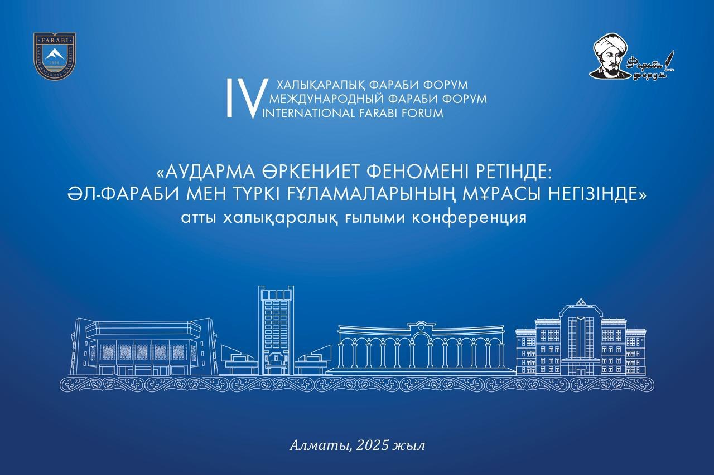

«АУДАРМА ӨРКЕНИЕТ ФЕНОМЕНІ РЕТІНДЕ: ӘЛ-ФАРАБИ МЕН ТҮРКІ ҒҰЛАМАЛАРЫНЫҢ МҰРАСЫ НЕГІЗІНДЕ»
атты халықаралық ғылыми конференция
2 сәуір, Әбсаттар Дербісәлі атындағы конференц-зал
- 15:00 - 16:50 ПЛЕНАРЛЫҚ МӘЖІЛІС
- 15.00 - 15.10 Мейірбаев Бекжан Берікбайұлы – Әл-Фараби мұрасын зерттеуді жандандырудағы стратегиялық бағыттар
- 15.10 - 15.20 Байтенова Нағима Жаулыбайқызы – Жаһандық рухани ізденіс пен дамудағы Румидің сопылық философиясы
- 15.20 - 15.30 Шуайбу Умар Гохару – Әл-Фарабидің аудармаға әсері: интеллектуалды перспектива
- 15.30 - 15.40 Төлеубаева Самал Абайқызы – Фараби мәтінін оқудың аудармадағы парадигмасы
- 15.40 - 15.50 Тәжікова Клара Хашимқызы – Әбу Насыр әл-Фараби адамның ғылыми-танымдық іс-әрекетіндегі аударманың маңызы туралы
- 15.50 - 16.00 Құрманалиева Айнұр Дүрбелеңқызы – Қазақ тіліндегі философиялық терминологияны қалыптастырудағы әл-Фараби мұрасын зерттеудің маңыздылығы
- 16.00 - 16.10 Фахиме Реза Шакиба – Фараби мен Ибн Сина туралы ойдағы идеалды қаланың көшбасшысы
- 16.10 - 16.20 Құранбек Әсет Абайұлы – «Әл-Фараби және қазіргі заман» курсы: мазмұны, ерекшелігі, маңызы
- 16.20 - 16.30 Махмуд Анами – Әбу Насыр әл-Фарабидің ғылым мен философиялық ойды дамытуға қосқан үлесі
- 16.30 - 16.40 Дүйсенбаев Абай Қабақбайұлы – Түркі ғұламаларының тағылымдық мұрасындағы этнопедагогикалық көзқарастар
- 16.40 - 16.50 Өмірбекова Әлия Өмірбекқызы – Ұлттық сананы негіздеудегі әл-Фараби мұрасы
- 16.50 - 17.00 Нүсіпханов Тимур Нүсіпханұлы – Дерадикаландыру саласында теологиялық әдебиеттердің маңыздылығы
- 17:00 - 17:10 Әл-Фараби атындағы Қазақ ұлттық университетінің философия және саясаттану факультеті мен «IHSAN» ғылым және мәдениет орталығы арасында Ынтымақтастық жөніндегі меморандумға қол қою
- 17.10 - 17.20 «IHSAN» ғылым және мәдениет орталығы атынан Әл-Фараби атындағы Қазақ ұлттық университетінің Ғылыми кітапханасына кітап сыйлау
- 17:20 - 17:30 Естелік фото
- 3 сәуір, 10:00, №123 №1-секция. Қазақ тіліндегі философиялық терминологияның қалыптасуындағы әл-Фараби мұрасының орны
- 3 сәуір, 10:00, №126 №2-секция. Аударма – Батыс пен Шығыс өркениеті сұхбатының негізі
- 3 сәуір, 10:00, №120 №3-секция. Ұлттық сана мен бірегейлікті негіздеудегі әл-Фараби мұрасының рөлі
- 3 сәуір, 10:00, №124 №4-секция. Қазақстандық әлеуметтік-гуманитарлық ғылымдағы әл-Фараби интеллектуалдық мұрасының өзектілігі мен сабақтастығы
«АУДАРМА ӨРКЕНИЕТ ФЕНОМЕНІ РЕТІНДЕ: ӘЛ-ФАРАБИ МЕН ТҮРКІ ҒҰЛАМАЛАРЫНЫҢ МҰРАСЫ НЕГІЗІНДЕ» атты халықаралық ғылыми конференция
СЕКЦИЯЛЫҚ МӘЖІЛІСТЕР
- 1-секция. ҚАЗАҚ ТІЛІНДЕГІ ФИЛОСОФИЯЛЫҚ ТЕРМИНОЛОГИЯНЫҢ ҚАЛЫПТАСУЫНДАҒЫ ӘЛ-ФАРАБИ МҰРАСЫНЫҢ ОРНЫ Модератор: Таджикова Клара Хашимқызы, Хатшы: Аликбаева Маржан Башанқызы
- 2-секция. АУДАРМА – БАТЫС ПЕН ШЫҒЫС ӨРКЕНИЕТІ СҰХБАТЫНЫҢ НЕГІЗІ Модератор: Балтымова Мира Рашидқызы, Хатшы: Хаван Айдынгүл
- 3-секция. ҰЛТТЫҚ САНА МЕН БІРЕГЕЙЛІКТІ НЕГІЗДЕУДЕГІ ӘЛ-ФАРАБИ МҰРАСЫНЫҢ РӨЛІ Модератор: Өмірбекова Әлия Өмірбекқызы, Хатшы: Байжұма Сәмет
- 4-секция. ҚАЗАҚСТАНДЫҚ ӘЛЕУМЕТТІК-ГУМАНИТАРЛЫҚ ҒЫЛЫМДАҒЫ ӘЛ-ФАРАБИ ИНТЕЛЛЕКТУАЛДЫҚ МҰРАСЫНЫҢ ӨЗЕКТІЛІГІ МЕН САБАҚТАСТЫҒЫ Модератор: Байтенова Нағима Жаулыбайқызы, Хатшы: Дүйсенбаев Абай Қабақбайұлы